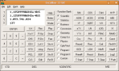

Home
Name: Excalibur OS: Win9x/Me/2k/XP Properties: EXCALIBUR was written to create a full featured RPN (Reverse Polish Notation) calculator for Windows. It is an exclusively RPN calculator designed for ease of use and quick results.
Link to Homepage: Excalibur by David Bernazzani Tip:If you have a "Calculator" button on your keyboard (e.g. the MS Natural Ergonomic Keyboard 4000) you can start Excalibur with this buttion by setting this registry key (change to fit your path to Excalibur) Windows Registry Editor Version 5.00 [HKEY_LOCAL_MACHINE\SOFTWARE\Microsoft\Windows\CurrentVersion\Explorer\AppKey\18] "ShellExecute"="c:\\Program Files\\Excalibur\\Excal32.exe"
Name: Clipomatic OS: Win9x/Me/2k/XP Properties: Clipomatic is a clipboard cache program - it remembers what was copied to the clipboard even after new data is copied, and allows you to retrieve the old data. While there are many programs that do the same, none are quite so convenient, simple to use, or efficient as Clipomatic. Link to Homepage: Mike Lin's Clipomatic page I don't use this software anymore. I switched to ArsClip.
Name: StartUp Control Panel OS: Win9x/Me/2k/XP Properties: Startup Control Panel is a nifty control panel applet that allows you to easily configure which programs run when your computer starts. It's simple to use and, like all my programs, is very small and won't burden your system. A valuable tool for system administrators!
Link to Homepage: Mike Lin's StartUp Control Panel page Update: Now I use AutoRuns.
Name: Crimson Editor OS: Win9x/Me/2k/XP Properties: The Crimson Editor is a fantastic test editor with tag colouring for many programing languages. It can start other programs and grab their output and has many other useful features. I use it mostly as an Perl Editor.
Try it, it's free!Link to Homepage: Crimson Editor
Name: Change Icon OS: Win9x/Me/2k/XP Properties: Easy Change icon representing folders and drives. Full drag&drop and full integrated in Windows interface. Link to Homepage: Change Icon (not active anymore)
You can download the program from pctipp.ch or directlyl from here.
Name: Folder Icons for Win32 OS: Win9x/Me/2k/XP Properties: Folder Icons for Win32 is a simple program that allows you to assign an individual icon to any folder on your system. Link to Homepage: Folder Icons for Win32
New Homepage
Name: Popcorn OS: Win9x/Me/2k/XP Properties: Popcorn is a freeware ultra-lightweight POP3/SMTP/ESMTP e-mail client, free from unwanted and useless bloatware features. Being a true client/ server application, it does not work in the same way as a typical mail program. This means that you're reading mail from a POP3 server directly, without downloading it to a local mailbox on your PC (although you can save mail messages locally if you want to). This makes it ideally suited for "on the road" mail access, and for scanning, reading and sending mail over slow internet connections.
Popcorn supports multiple user profiles, enabling you to read and send mail from any number of different POP3 accounts.Link to Homepage: Popcorn - Product page
Name: Transparent OS: Win9x/Me/2k/XP Properties: This utility will turn your Windows 95 or NT desktop icon text backgrounds transparent; allowing your wallpaper to show through. It will also allow you to easily change the icon text to any color. It's completely free, with no splash, and is only 25k. Link to Homepage: Jay Guerette's Transparent web page
Here is a list of placer were you can find good collections of software:
- Free Software For DOS Reviews, descriptions, links to over 600 DOS programs (no games).
An excellent collections for people who still do some work in 16bit. Huge and well maintained.- Mega 16-bit Freeware List Another place to look for 16bit software, for DOS and Windos 3.1x.
- DOS Tools (DOS rules) Small and tiny programs. Page mainly in German.
- ESSENTIAL DOS 5.00 - 7.xx Power Toys AXCEL216 collection of DOS tools and toys.
- DOWNLOAD from CNet The comments about software you are interested in are often very helpful
- Tucows Good web-software archive. If you can't download it form the homepage because it's off or dead try here.
- Simtel Another great software archive.